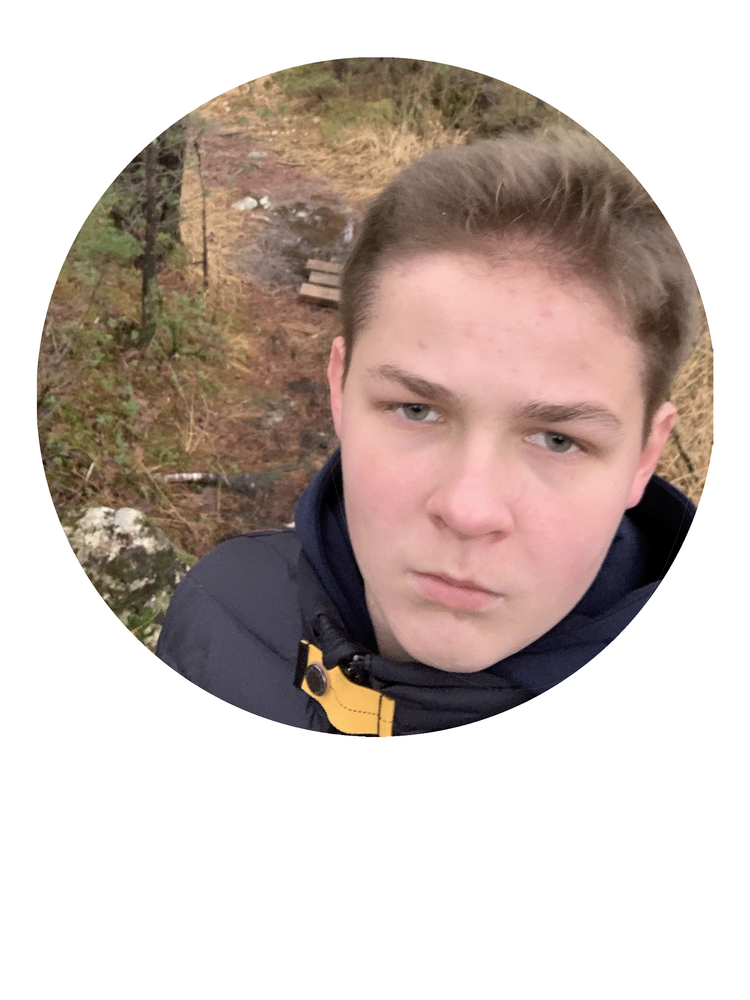
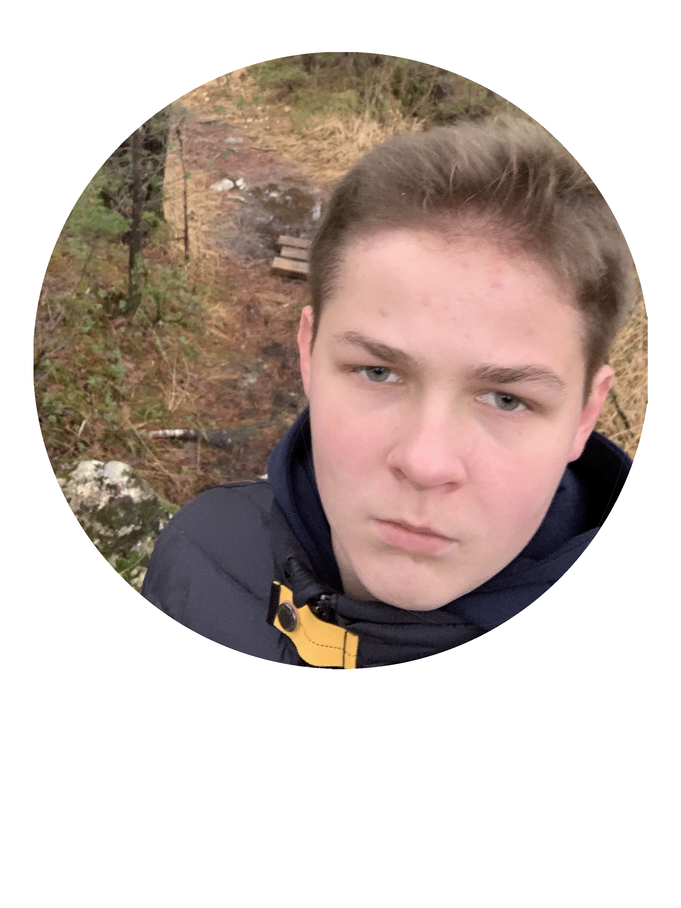
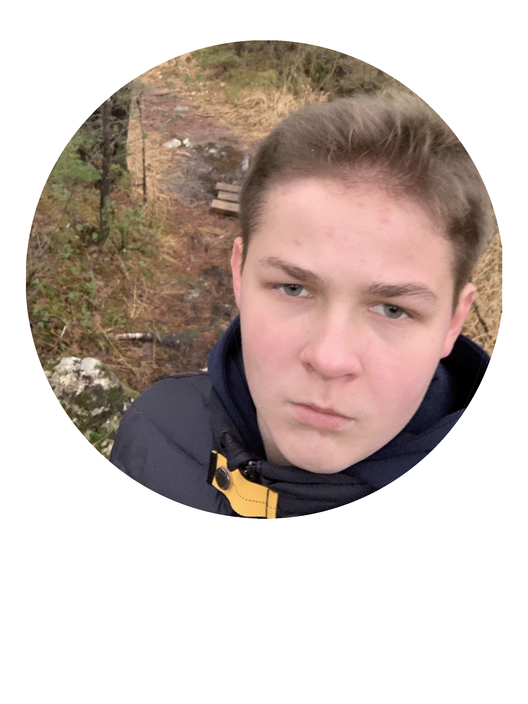
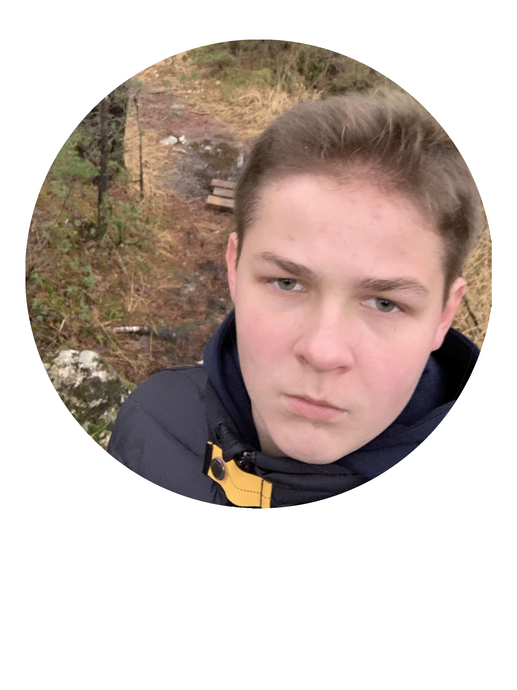

Under her finner du noen få linker som går til de forskjellige prosjektene jeg har hatt oppigjenom min tid her på Amalie Skram Videregående Skole. Disse prosjektene er bare prosjekter i programfag som Konseptutvikling og Programmering og Teknologiforståelse og ikke Engelsk og Naturfag.
Konseptutvikling og Programmering er et programfag som du har på Amalie Skram Videregående Skole. Trykk her for å se prosjektene mine i Konseptutvikling og Programmering
Produksjon og Historiefortelling er et programfag som du har på Amalie Skram Videregående Skole. Trykk her for å se prosjektene mine i Produksjon og Historiefortelling
Teknologiforståelse er et programfag som du har på Amalie Skram Videregående Skole. Trykk her for å se prosjektene mine i Teknologiforståelse